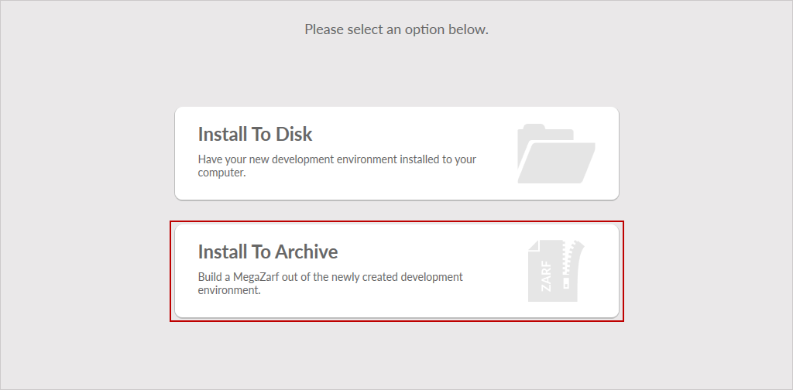
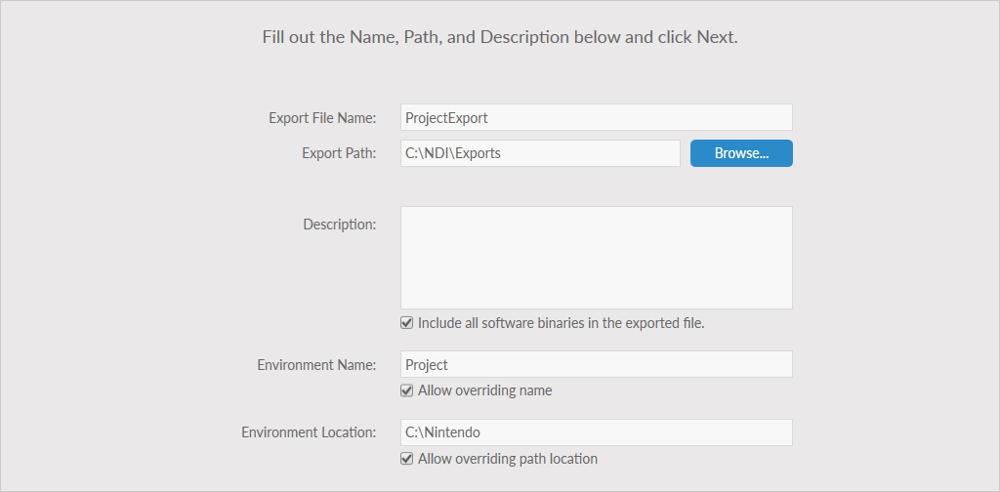
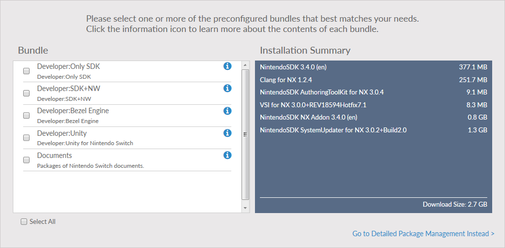

Instead of installing an environment directly, NDI can make a MegaZarf for a new environment with a similar method. A MegaZarf file contains all the information required for another instance of NDI to install that environment. This can be useful when a specific environment needs to be created and distributed among a team. Optionally, the MegaZarf can be created without adding downloaded files, which require other users to connect to the server and download the files during installation but decreases the size of the MegaZarf.
To create a custom MegaZarf, follow these steps.
- Start NDI and click Dev Environments.
- Click Create My Own. If there is already an environment on your system, before clicking Create My Own, click New Environment above the environment list on the left of the screen.
- Click Install To Archive.

- On the choose location screen, enter a file name and path for the MegaZarf. Enter an explanation about the use of the MegaZarf in the Description field. This description will be visible when other users import the MegaZarf. Enter a name and location the environment should install to when the MegaZarf is imported. After entering the information, click Next to continue.

- If not already logged in to NDI, a dialog box is displayed requesting that you to log in to your account. Before continuing further, complete this step using a Nintendo Developer Portal ID.
- After completing the log in process, select which Platform to develop for, any additional Tool Set (these are standalone options that can be installed alongside the SDK, such as additional documentation), and the Foundation, which forms the core of your new environment (generally, the core SDK software). After making your selections, click Next to continue.
- Select the version of the Foundation software to install. Generally, install the latest version. Click Next to continue.
- On the configuration screen, in addition to the Foundation software, you can select additional software bundles that contain sets of software to install. After all selections are made, click Next.

- A summary of the software to be installed is displayed, including the total file size of the final environment.
- Click Install to start the download and MegaZarf creation process.
- After the installation has been completed, click Finish to return to the environments list.